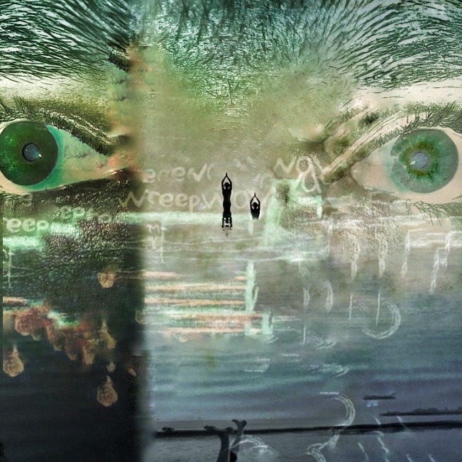
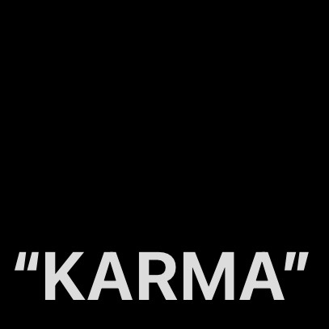
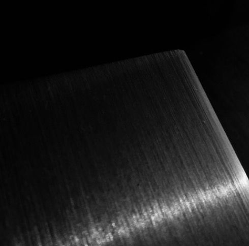

vision
in his work, he focuses on process, and collaboration.
simon is a multi-instrumentalist with formal training in piano, alto saxophone, vocals and drums.
simon strives to make electrifying, heart-wrenching protest music that moves and empowers people.
as a collaborator, he hopes to provide a safe space for artists to explore the depths of their consciousness.


